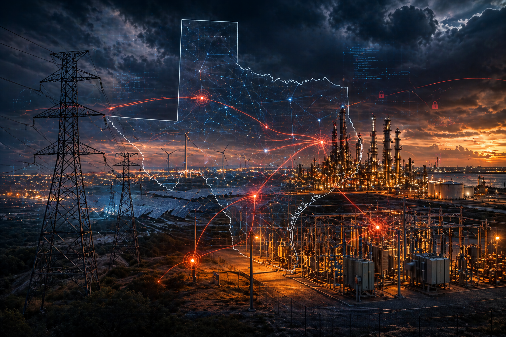

Sector Intelligence
Texas Energy Is Strategic Terrain in a Contested Cyber Domain
Texas energy is not just an operating sector. It is strategic terrain. ERCOT's isolated grid, Permian Basin production, Gulf Coast LNG exports, and large-load data center interconnections sit at the intersection of geopolitical coercion, regulatory scrutiny, and national economic consequence. For energy sector boards and general counsel, the question is whether leadership can show it understood the strategic warning and documented action before disruption forced the decision.

Questions for Leadership
Could your leadership answer these today?
A risk rating does not tell a board what to decide. These questions do. Where the answer is unclear, untested, or undocumented, there is a decision gap.
- Which external dependency could change this decision?If ERCOT issues an emergency directive or a key OT vendor's remote access is suspended, which decisions move, and who makes them?
- Who owns escalation?Who decides to shift operations to manual or cut vendor access, and at what threshold?
- What warning threshold changes posture?A federal advisory naming your equipment, new pre-positioning reporting, or rising regional tension: which one moves you, and to what?
- Which assumption has not been tested?That backup generation, fuel, and communications hold if the disruption lasts days rather than hours.
- What must be documented?What leadership knew about pre-positioning reporting, when it knew it, and what it decided.
- Has this decision ever been rehearsed?An IT-to-OT shutdown decision, made under time pressure, of the kind that turned Colonial Pipeline into a national supply event.
- What happens if the disruption spreads into another sector?If grid stress pushes data centers onto backup power, which of your customers, providers, and partners are affected at the same moment?
What Adversaries Are Targeting
Crown Jewels of Texas Energy
Adversaries prioritize infrastructure where compromise can create operational disruption, coercive pressure, financial cost, or national-level strategic pressure.
ERCOT Market & Control Systems
Grid reliability, OT integrity, and real-time market operations, the systems that balance generation, load, and frequency across the Texas interconnection. Compromise here carries national consequence.
Refinery & Pipeline OT Environments
Permian Basin upstream operations, Gulf Coast refinery control systems, and interstate pipeline SCADA environments. A disruption here affects fuel supply chains with downstream national economic effects.
Critical Equipment & Remote Support Channels
Authorized vendor remote access to priority electric grid equipment (CEGE/CEGS) creates a high-value attack pathway. ERCOT's LSIPA program specifically governs foreign-linked equipment and access attestation.
Large-Load Interconnection Infrastructure
≥75 MW data center and AI compute loads tied to ERCOT via SB 6-governed interconnections create bidirectional risk: grid events disrupt compute; compute infrastructure attack surfaces reshape grid planning.
Oilfield Services & Midstream Enablers
Texas-headquartered oilfield services companies, whose disruption propagates across upstream and downstream operations, represent a high-density target set for both ransomware groups and nation-state actors.
Municipal & Cooperative Utilities
Texas cooperatives and municipal utilities serve large geographies with thinner security resources. They can present attractive access pathways when adversaries seek less-protected nodes in larger infrastructure ecosystems.
Priority Threat Actors
Who Poses Risk to Texas Energy
Two threat populations pose risk to Texas energy infrastructure, with different objectives and timelines.
Volt Typhoon
PRC-linked actors, including Volt Typhoon, have been publicly associated with pre-positioning activity in U.S. infrastructure using legitimate tools, credential theft, and low-noise persistence. Texas grid and energy assets represent plausible high-value targets for this class of activity.
Sandworm / GRU
Russia-linked actors, including Sandworm, have demonstrated destructive capability against energy infrastructure abroad. Texas grid operations represent a high-value contingency target set.
Ransomware Groups (Qilin, LockBit-affiliates)
Financially motivated actors frequently target oilfield services, cooperative utilities, and midstream operators for ransomware and double-extortion. Exfiltrated data used for follow-on spearphishing against adjacent targets.
IRGC-CY / Hacktivist Proxies
Iran-linked actors and proxy hacktivist networks remain a priority concern during periods of U.S.-Iran tension, particularly where disruption could support coercive signaling.
Incident Record
Texas Energy: What Has Already Happened
The following vignettes are drawn from primary sources, SEC filings, government records, and public disclosures, covering the last three to five years. This is not a theoretical threat. It is an operational one.
- Feb 2026Governance / Supply Chain
ERCOT LSIPA Program, Supply-Chain Cyber Risk Enforcement
ERCOT's April 2026 LSIPA briefing documented compliance actions including terminations for nonresponsiveness and reporting on foreign-linked affiliate equipment and priority electric grid equipment purchases. Not an attack, a governance vignette that reveals how seriously Texas regulators treat vendor and remote access as a cyber attack surface.
Texas operational impact: Demonstrates institutional recognition that vendor ownership and remote access pathways constitute grid cyber risk requiring formal enforcement mechanisms, not just policy guidance.
Source: ERCOT LSIPA April 2026 Hearing Documentation
- Oct 2025Public Reporting
Texas Electric Cooperatives, Qilin Ransomware Claims
Ransomware groups including Qilin claimed attacks on Texas electric cooperatives, with subsequent breach notification pathways indicating small-to-mid utility exposure. San Bernard and Karnes Electric cooperatives were among those named, with financial records and board-director PII reportedly exfiltrated.
Texas operational impact: Demonstrates long-tail utility vulnerability. Texas cooperatives and municipals serve large geographic footprints with thinner security resources, a structural gap adversaries actively exploit.
Attribution: Qilin ransomware group, confirmed Russian-nexus criminal ecosystem
- Oct–Nov 2024SEC Filing
Newpark Resources Ransomware, Oilfield Supply Chain
Newpark Resources disclosed a ransomware incident with unauthorized access and disruptions to information systems and business applications. Operations continued via downtime procedures, a response protocol that illustrates both the threat and the necessity of pre-planned continuity.
Texas operational impact: Highlights operational continuity strain in oilfield supply chain; shows material reporting obligations and business continuity reliance for Texas-headquartered energy suppliers.
Attribution: Not publicly attributed in SEC filing
- Aug–Sep 2024SEC Filing
Halliburton Cyber Incident, Oilfield Services Disruption
Halliburton's SEC filing reported unauthorized third-party access to certain systems. Response included law enforcement engagement and remediation. Halliburton is among the largest oilfield services providers with deep Texas operational roots.
Texas operational impact: Illustrates the vulnerability of Texas-centered oilfield services enablers whose disruption propagates across upstream and downstream operations nationally.
Attribution: Not publicly attributed in SEC filing
- May 2021National Consequence
Colonial Pipeline Ransomware, Houston-Origin National Disruption
The Colonial Pipeline ransomware incident originated in Houston region infrastructure and the shutdown decision produced national fuel supply consequences. The incident demonstrated that IT-to-OT operational coupling, specifically a billing system compromise driving a pipeline shutdown decision, can convert a cyber event into a physical supply crisis.
Texas operational impact: Texas-origin energy infrastructure disruption creates national supply shocks. The decision architecture connecting IT and OT environments remains a structural risk across the sector.
Attribution: Widely publicly attributed to a ransomware group
Liberty CTI Assessment
The Energy Sector Judgment
Liberty CTI assesses with HIGH CONFIDENCE that Texas energy infrastructure is exposed to pre-positioning activity by nation-state actors. The objective is not near-term disruption. It is access that can create coercive pressure during a future geopolitical crisis. The most consequential risk is not only the ransomware event that has already happened. It is access established for future pressure.
Liberty CTI keeps its judgments on the record and revisits them as evidence changes. See The Track Record.

Could leadership make the call under grid pressure?
The Executive Intelligence Baseline establishes which of these questions your leadership can already answer. The Executive Decision Exercise tests the ones it cannot.